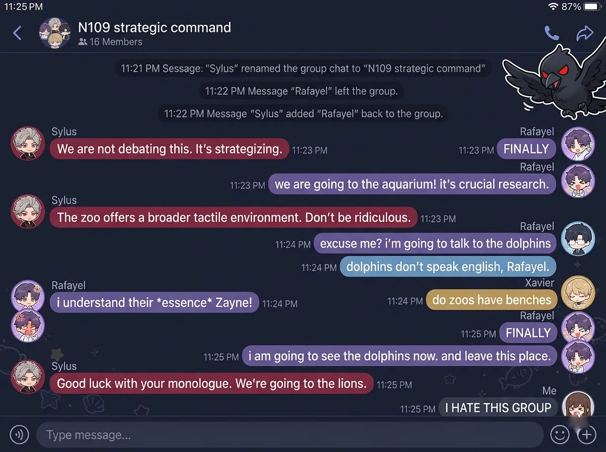
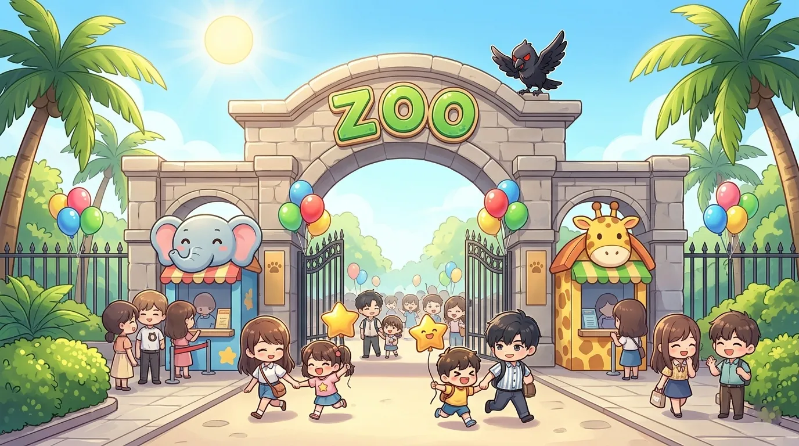
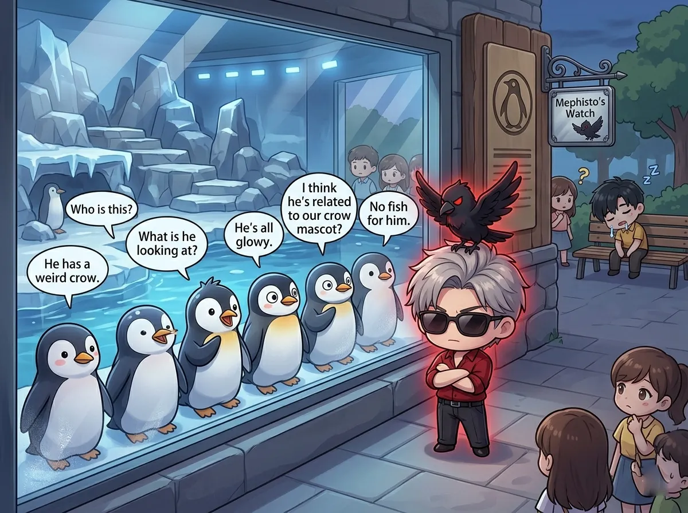
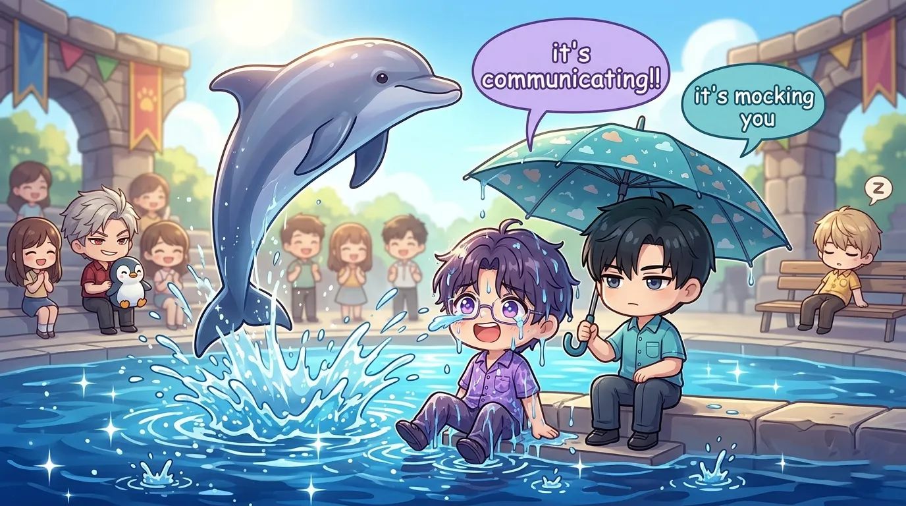
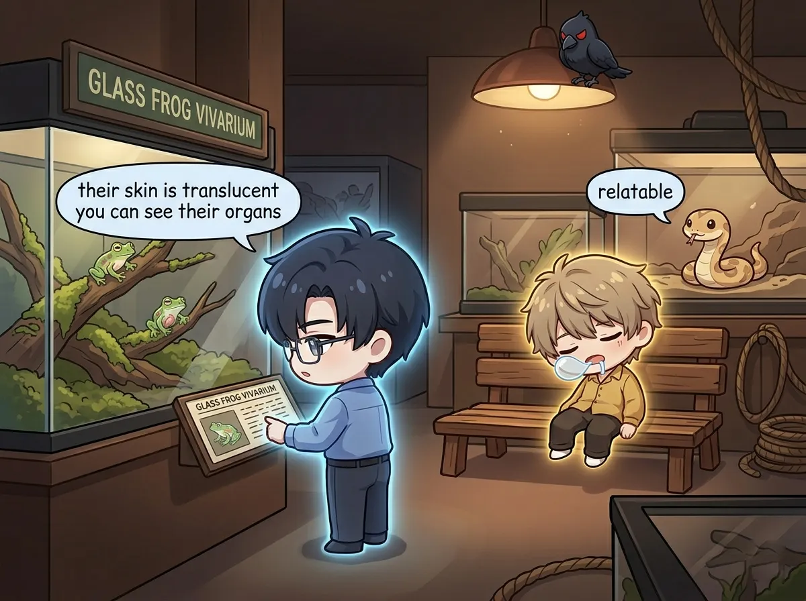
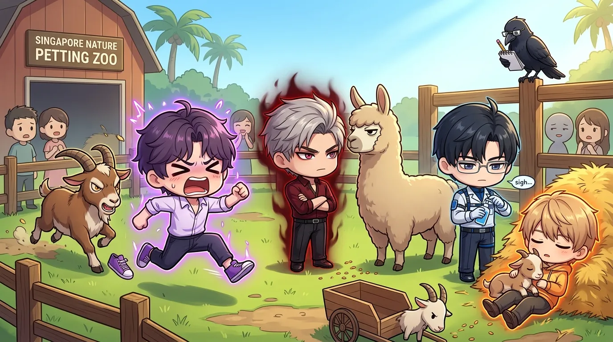
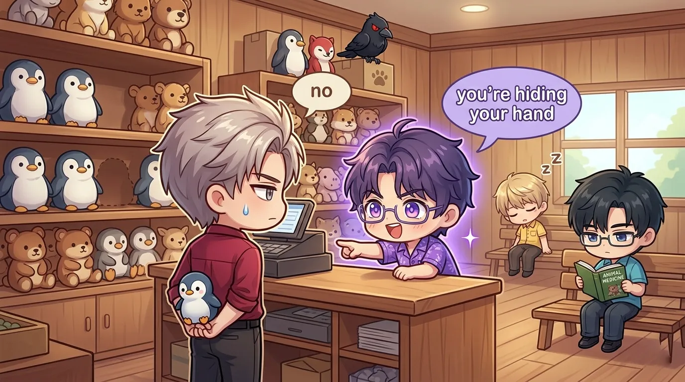
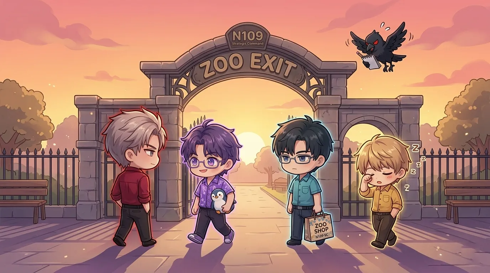

or: four men, one zoo, zero animal safety
it started, as most disasters do, with sylus.
"we should go to the zoo," he said.
rafayel was already planning which animal he would free.
this is what happened next.


sylus arrived first. black coat. black sunglasses. indoors. at a zoo.
he stood by the ticket booth. arms crossed. evaluating the security fence.
(he was calculating how many animals he could take in a fight.)
zayne arrived second. he brought sunscreen. and hand sanitizer. and a small first aid kit.
"you brought a first aid kit," said sylus.
"animals are unpredictable."
"it's a petting zoo."
"especially the goats."
rafayel arrived third. wearing a dolphin shirt. and sunglasses. indoors.
"is that a dolphin shirt," asked zayne.
"i'm manifesting."
"you're embarrassing."
xavier arrived fourth. twenty-two minutes late. he had fallen asleep in the car.
"the parking lot was sunny," he explained.
"you weren't driving," said rafayel.
"i know. the back seat. the sun was warm."
"let's go," said sylus.
and they went.

sylus found the penguins first. he stood in front of the glass. arms crossed. staring.
the penguins stared back.
"they're judging me," he said.
"they're penguins," said zayne.
"judging penguins."
one penguin waddled closer. pressed its beak against the glass. directly at sylus.
"see?" said sylus.
rafayel joined him. pressed his face against the glass. the penguins tilted their heads.
"they like me," said rafayel.
"they're confused," said zayne.
a zookeeper walked by. "sir, please don't press your face on the glass."
rafayel stepped back. the penguins followed him.
"they're following me."
"they're following the glass," said zayne.
xavier found a bench near the penguin exhibit. sat down. closed his eyes.
"xavier, no," said rafayel.
"the penguins are calming."
"they're behind glass."
"i can feel their energy."
sylus was now being followed by a line of penguins. inside the exhibit. waddling wherever he walked.
"this is unusual," said the zookeeper.
"this is normal for him," said zayne.

rafayel ran to the dolphin show. front row. splashing zone.
"i'm going to make eye contact," he said.
"they're dolphins," said zayne.
"telepathic dolphins."
the show started. dolphins leaped. crowd cheered. rafayel waved.
a dolphin splashed him. directly in the face.
"it's communicating," said rafayel, wiping water from his sunglasses.
"it's mocking you," said zayne.
rafayel waved again. the dolphin splashed him again.
"we have a connection."
"you have a soaking wet shirt."
xavier was asleep on the bleachers. the dolphins leaped. the crowd screamed. xavier slept.
"how is he sleeping through this," asked rafayel.
"he's xavier," said zayne.
sylus stood at the back. arms crossed. a penguin had followed him from the previous exhibit. it stood next to him. watching the dolphins.
"there's a penguin," said the person next to him.
"i know," said sylus.
"how did it get here."
"it followed me."
the person moved away.

zayne loved the reptile house. dark. quiet. temperature controlled.
"optimal conditions," he said.
he read every informational plaque. out loud.
"the green tree python can live up to twenty years."
"no one asked," said rafayel.
"education never stops."
he stopped at the glass frog exhibit. stared for five minutes.
"their skin is translucent. you can see their organs."
"i didn't need to know that," said rafayel.
"knowledge is power."
xavier found a bench in the reptile house. dark. warm. perfect.
"xavier, don't—" said rafayel.
too late. xavier was already asleep.
a snake in the nearby exhibit turned its head. looked at xavier. looked at the bench. looked back at xavier.
"even the snake is judging him," said rafayel.
"the snake is considering hibernation," said zayne. "it's relatable."
sylus stood in front of the komodo dragon exhibit. the komodo dragon stared at him. sylus stared back.
"who would win," asked rafayel.
"don't," said zayne.
"i'm just asking."
"don't."
sylus didn't answer. but he was calculating.

rafayel was excited. "small animals. i can pet them."
he reached for a goat. the goat headbutted his hand.
"it's playing hard to get."
"it's protecting its territory," said zayne.
rafayel tried again. the goat ate his map.
"that was the map."
"i know. i saw."
sylus approached a llama. the llama looked at him. sylus looked at the llama.
neither blinked.
"is he having a staring contest with a llama," whispered rafayel.
"yes," said zayne.
"is he winning."
"i can't tell."
xavier sat down in the hay. a baby goat climbed onto his lap. xavier didn't move.
"xavier, there's a goat on you."
"i know. it's warm."
he fell asleep again. the goat stayed.
"even the animals are napping with him," said rafayel.
"he has that effect," said zayne.
sylus finally blinked. the llama walked away. victorious.
"did you lose to a llama," asked rafayel.
"it was a draw."
"it was not a draw."

rafayel found the gift shop first. he bought a dolphin plushie. a penguin keychain. a shirt that said "i <3 sloths."
"you're wearing that shirt now," said zayne.
"it's called fashion."
"it's called a midlife crisis."
zayne bought a book about animal medicine. "for research."
"you're a doctor for humans," said rafayel.
"anatomy is anatomy."
xavier bought nothing. he was asleep on a bench outside the gift shop.
sylus bought one thing. a small penguin plushie. held it behind his back.
"did you buy something," asked rafayel.
"no."
"you're hiding your hand."
"i'm not."
"you are."
sylus didn't answer.
mephisto, perched on a lamp post outside, cawed. he had seen everything.

they left at sunset. rafayel was wearing his new shirt. zayne was reading his animal medicine book while walking. xavier was asleep on a bench near the entrance. (they had to wake him.)
"today wasn't terrible," said rafayel.
"you say that every time," said sylus.
"it keeps being true."
"don't ruin it."
zayne sighed. "the goats were aggressive."
"you loved the goats," said rafayel.
"...they were medically fascinating."
from behind his back, sylus pulled out the penguin plushie. handed it to rafayel.
"what's this," said rafayel.
"nothing."
"you bought me a penguin."
"it's for the whale. so it won't be lonely."
rafayel stared at the penguin. stared at sylus. stared at the penguin.
"...that's really cute."
"say that again and i'll take it back."
rafayel hugged the penguin. said nothing.
but he was smiling.